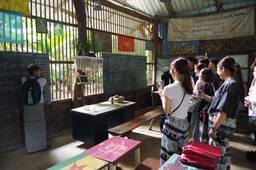
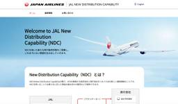

トラベルボイス
https://www.travelvoice.jp
観光産業の最新情報やトレンドを伝える、読者数No.1の専門ニュースメディア。厳選ニュースのほか、分析データや識者によるわかりやすい解説コラム記事も満載。その日のニュースをコンパクトにまとめたメールマガジンも好評。
フィード

若者が海外旅行に向かうために必要なことは？ 安さだけでは動かない若者の「旅の設計」と「動機付け」のヒント【コラム】
トラベルボイス
国学院大学・観光まちづくり学部教授によるコラム。今回は、若者の海外旅行に促す「未知の旅」の設計術について。「費用以外の動機付け」で若者の好奇心と主体性を育むアプローチを解説。
10時間前
LGBTQ＋の旅行者がホテル選びで重視するポイント、ホスピタリティのあり方など、ブッキング・ドットコム本社で取材した
トラベルボイス
LGBTQ＋の旅行についての議論をアムステルダムのブッキング・ドットコム本社で現地取材。選ばれるためのホテルの取組みからホスピタリティのあり方まで。
20時間前
格付け会社の航空会社ランキング2026、総合トップはシンガポール航空、ANAは4位、JALは9位
トラベルボイス
スカイトラックス（SKYTRAX）の2026年「ワールド・ベスト・エアライン」はシンガポール航空。ANAが4位、JALが9位に入った。
2日前
ミシュランのホテル格付け2026、日本から145軒が獲得、新たに19軒を選出、最上位は7軒を維持
トラベルボイス
「ミシュランキーホテルセレクション2026」が発表。日本では新たに19軒が加わり145軒がミシュランキーを獲得。2ミシュランキーは23軒に拡大。
2日前
米・ニューヨークで日本の観光・食を発信、観光庁ら官民連携で訪日プロモーション、GREEN×EXPO 2027もPR
トラベルボイス
観光庁ら官民が連携し、米国・ニューヨーク市で日本の観光と食の魅力を伝えるイベント開催。訪日観光と消費額の拡大目指す。2027年に開かれる国際園芸博覧会もPR。
1日前
JTBとマレーシア政府観光局が送客拡大で協力覚書、新エリア開拓や「地方to地方」チャーターなどで送客20％増へ
トラベルボイス
JTBとマレーシア政府観光局が協力覚書を締結。戦略的パートナーシップ構築し、送客実績を前年同期比20％増へ。
2日前
フィンエアー、2027年夏期に成田線を増便、最大週14便、羽田を含めた東京線は過去最多
トラベルボイス
フィンエアーは、2027年夏期スケジュールで成田/ヘルシンキ線について、2027年5月12日からは週7便から週10便に、さらに5月17日～8月14日までの期間は週14便に増便する。
1日前

JAL、アマデウス経由でNDC航空券を販売開始へ、世界26カ国・地域で展開
トラベルボイス
JALは、アマデウスの「Amadeus Travel Platform」を通じたNDC（次世代流通規格）コンテンツのグローバル展開を2026年10月から開始。
1日前
豪・シドニー西部、新空港の開港でMICE誘致を強化、会議助成金や大型コンベンション拠点を活用
トラベルボイス
オーストラリアのウェスタン・シドニー国際空港が2026年10月25日に開港。ウェスタン・シドニーへの観光客やMICEの誘致を強化。
1日前
ニュージーランド政府観光局、「食 × ウェルネス」で新キャンペーン、倉科カナさんを起用、JTB・HISと連携、南島直行便再開も追い風
トラベルボイス
ニュージーランド政府観光局が新キャンペーン「私を満たす、ニュージーランド旅」を開始。倉科カナさんを起用し、美食とウェルネスを軸に訴求。JTB、HIS、ニュージーランド航空と連携。
1日前